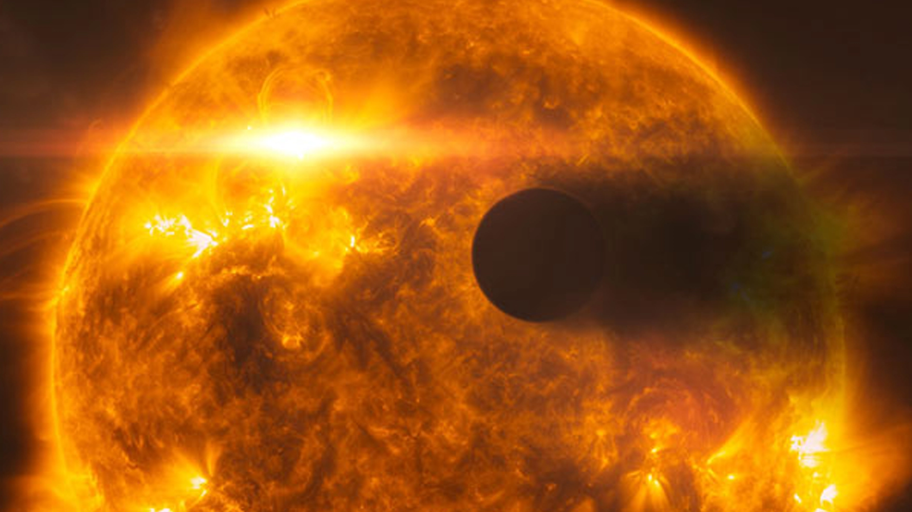

8 min read
WASP-12b, an intriguing and mysterious exoplanet located approximately 600 light-years away in the constellation of Auriga, stands as a testament to the diversity of the universe's planetary systems. Discovered in 2008, this gas giant is categorized as a "hot Jupiter" due to its close proximity to its host star, WASP-12, and its substantial mass and size comparable to Jupiter. However, what sets WASP-12b apart in the celestial menagerie is its astonishing characteristic: it is known as a "light-eater" because of its extremely low albedo, meaning it absorbs over 90% of the light from its star, making it one of the darkest planets ever discovered.
WASP-12b orbits its star at a breathtakingly close distance, completing a full orbit in just over a day. This proximity subjects the planet to intense stellar radiation, heating its atmosphere to extreme temperatures exceeding 2,500 degrees Celsius. The heat is so intense that it expands the atmosphere of WASP-12b, giving it a bloated appearance and leading to the loss of its atmospheric material to the star. Scientists speculate that the planet's darkness may be attributed to the presence of light-absorbing compounds like vaporized sodium and potassium, or clouds of gaseous titanium oxide in its atmosphere.
The relationship between WASP-12b and its host star is a cosmic dance with a grim fate. Observations suggest that the gravitational forces exerted by the star are distorting WASP-12b into an elongated shape and gradually pulling it closer, indicating that WASP-12b is being slowly consumed. This interaction provides a fascinating glimpse into the dynamics of planetary system evolution and the destructive power of stellar forces. The eventual consumption of WASP-12b by its star offers a stark reminder of the transient nature of celestial bodies.
The study of WASP-12b has profound implications for our understanding of exoplanetary systems, particularly those involving hot Jupiters. It challenges existing models of planetary formation and migration, highlighting the diverse outcomes of planet-star interactions. WASP-12b's extreme characteristics push the boundaries of what is considered possible in planetary science, urging researchers to reconsider assumptions about planetary composition, atmospheric dynamics, and the effects of close stellar proximity on planetary evolution.
Identified by the SuperWASP project in 2008
Completes an orbit around its star in about 1.09 Earth days.
With a radius about 1.79 times that of Jupiter's
600 light-years away in the constellation Auriga.
Among the myriad of fascinating characteristics exhibited by WASP-12b, its distinctively non-spherical shape stands out as a peculiar anomaly in planetary science. Due to the extreme proximity to its host star, WASP-12b is subjected to immense gravitational forces, which stretch and distort the planet into an elongated, egg-like shape. This deformation is a direct result of the tidal forces exerted by its star, similar to how the Moon's gravitational pull affects Earth's oceans, but on a far more dramatic scale. The gravitational interaction between WASP-12b and its star is a striking demonstration of tidal forces in action. As WASP-12b orbits so closely to its host, the side of the planet nearest to the star experiences significantly stronger gravitational attraction than the side facing away. This difference in gravitational pull stretches the planet, causing it to bulge outward along the line towards and away from the star, thus giving WASP-12b its distinctive egg-shaped appearance.In conclusion, the egg-shaped deformation of WASP-12b is a testament to the dynamic and often volatile nature of planetary systems. It embodies the complex interplay of forces that shape the universe's celestial bodies, offering invaluable insights into the mechanics of planetary formation and evolution. As we continue to explore the cosmos, the peculiarities of planets like WASP-12b enrich our understanding of the cosmos's boundless diversity, pushing the boundaries of what we know about the worlds beyond our own.